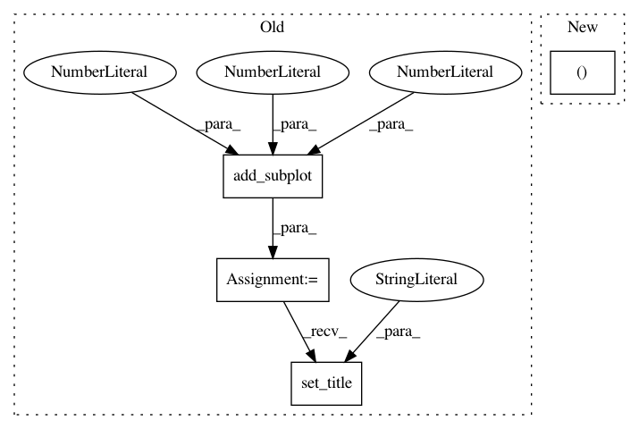

ff1ac0936c118d129bc8a8014958948d3b3883be,utils/data_vis.py,,plot_img_and_mask,#Any#Any#,3
Before Change
a.set_title("Input image")
plt.imshow(img)
b = fig.add_subplot(1, 2, 2)
b.set_title("Output mask")
plt.imshow(mask)
plt.show()
After Change
def plot_img_and_mask(img, mask):
classes = mask.shape[2] if len(mask.shape) > 2 else 1
fig, ax = plt.subplots(1, classes + 1)
ax[0].set_title("Input image")
ax[0].imshow(img)
if classes > 1:
In pattern: SUPERPATTERN
Frequency: 3
Non-data size: 4
Instances
Project Name: milesial/Pytorch-UNet
Commit Name: ff1ac0936c118d129bc8a8014958948d3b3883be
Time: 2019-10-26
Author: milesial@users.noreply.github.com
File Name: utils/data_vis.py
Class Name:
Method Name: plot_img_and_mask
Project Name: inferno-pytorch/inferno
Commit Name: d795f811eb13a20e18aa30c435cef0ad99e830ea
Time: 2018-08-10
Author: thorsten.beier@iwr.uni-heidelberg.de
File Name: examples/plot_unet_tutorial.py
Class Name:
Method Name:
Project Name: nipy/dipy
Commit Name: 28d073e505c196f281f06219d85a452283621e06
Time: 2013-08-24
Author: mauro.zucchelli88@gmail.com
File Name: doc/examples/reconst_dsi_metrics.py
Class Name:
Method Name: